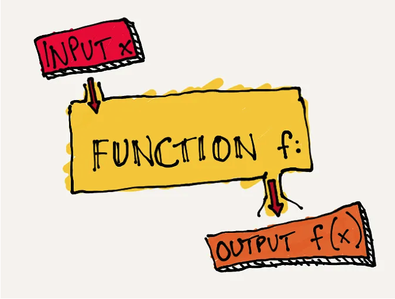
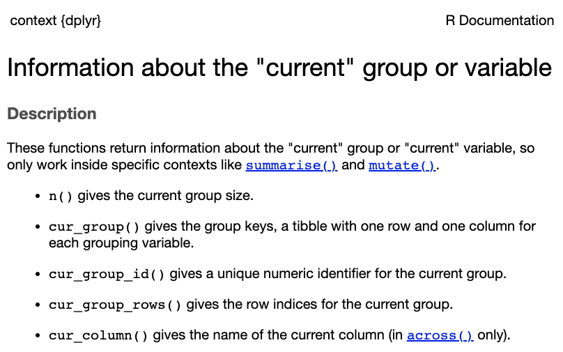
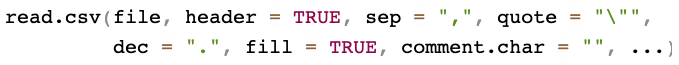
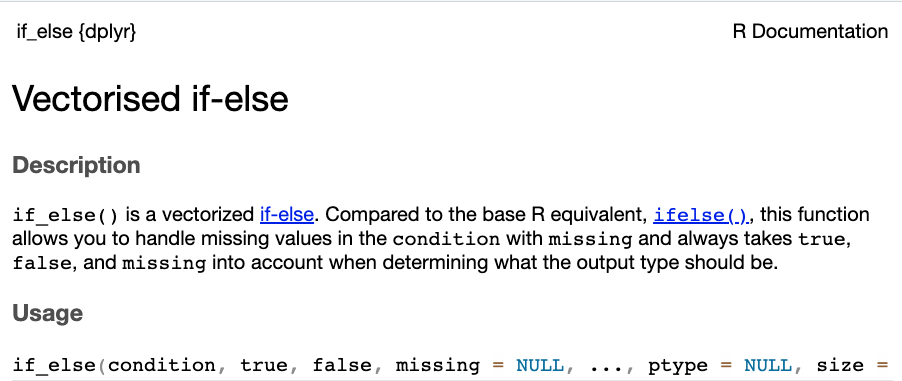
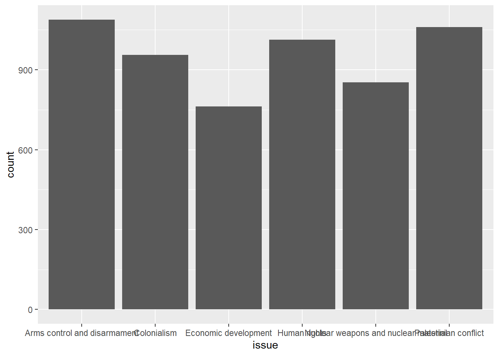
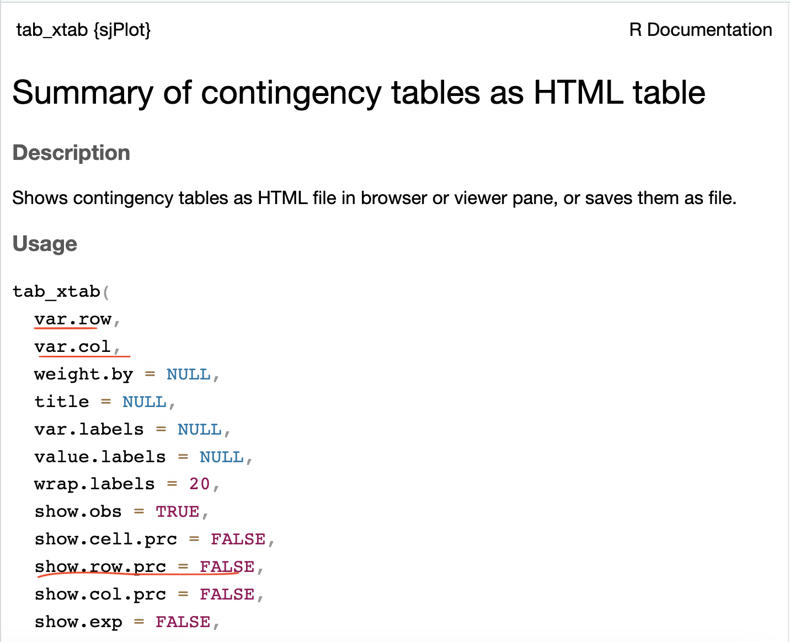
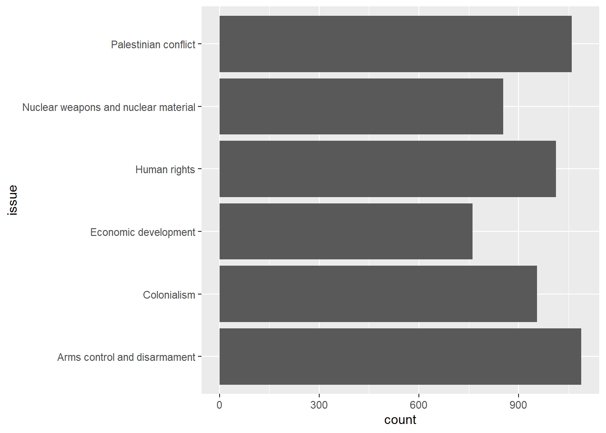
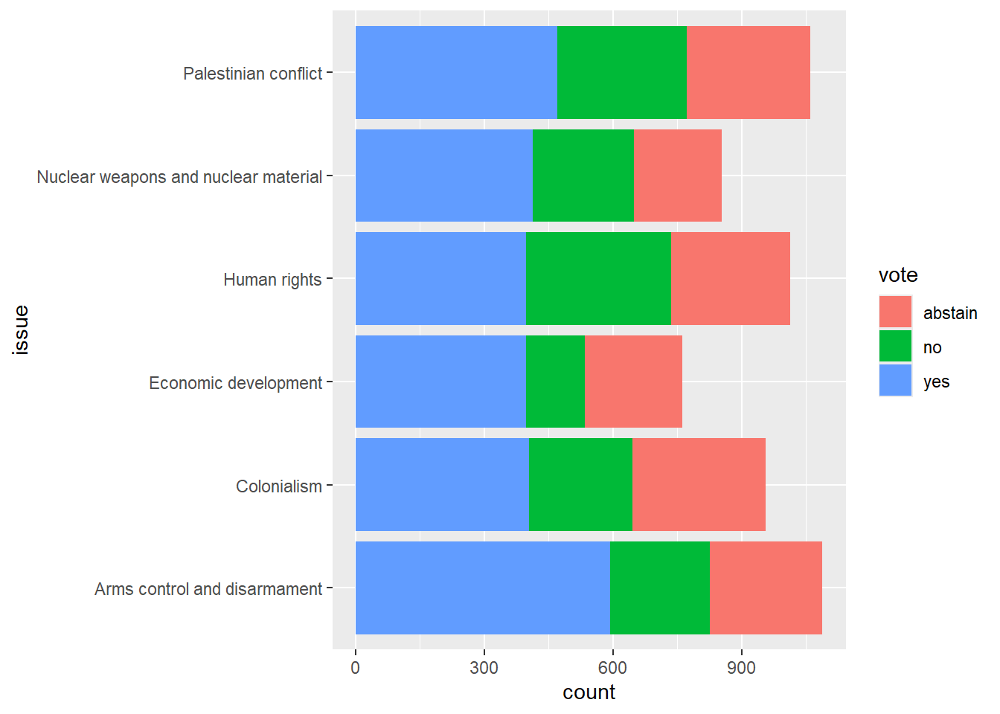
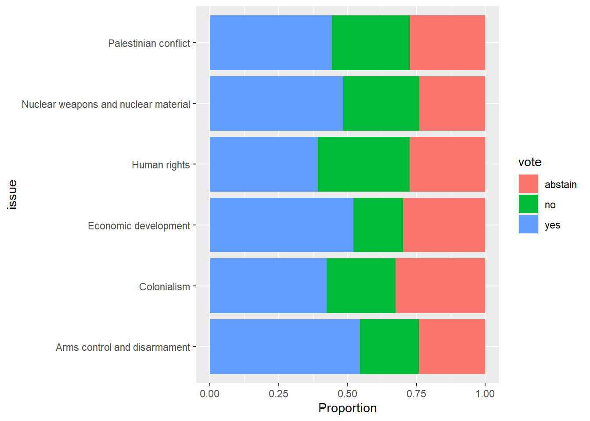

Chapter 4 Data visualization and Bivariate Analysis
Week 5 tutorial goals:
- Recap and a few more basics
- = versus ==
- missing values (NA)
- omitting/assuming arguments
if_else()
- Single variables using
ggplot- Categorical (nominal/ordinal)
- bar chart –
geom_bar()
- bar chart –
- Continuous (interval/ratio)
- histogram –
geom_histogram()
- histogram –
- Categorical (nominal/ordinal)
- Bivariate relationships
- crosstabs –
tab_xtab()fromsjPlot - visualizing crosstabs with stacked bar chart
geom_bar() - box plot
geom_boxplot() - scatter plot
geom_point()
- crosstabs –
4.1 Before the start of each class
4.2 Load data
We will be using two data sets today, one from last week—Canada’s votes at the UNGA—and the other is a survey of Canadians from the 2025 Canadian Election Study.
4.3 Recap and some additional basics
R scripts
R scripts should be complete in themselves. Before submitting your assignments, start a new session, clear your workspace, select the entire code (i.e. “Select All”) and run everything. You should not get any errors.
Syntax for functions: <functionname>(<argument(s)>)
Functions are a fixed series of actions done to an object. The syntax will always begin with the function name, followed by ().

(Image credit: https://medium.com/swlh/7-programming-concepts-functions-6072d7c50278)
In some cases, functions may not have arguments, for example, n(). The following is the documentation for n(),

Arguments are function-specific
Last week we learnt the following tidyverse functions
- filter()
- group_by()
- mutate()
- reframe()
- select()
- arrange()
group_by() takes either variables or conditional statements
mutate() and reframe() take variable assignment arguments (name = value).
mutate(), adds new changed variables/columns to the data frame.reframe()replaces the data with a new, smaller data frame that contains only the new columns
unvotes |>
mutate(years_ago = 2025 - year) # adds a column; every row is kept
#or
unvotes |>
reframe(votes = n()) # one row: the number of votesselect() and arrange() take variable names.
filter() takes expressions that produce a logical value, i.e. conditional statements
## rcid country country_code year vote session importantvote date
## 1 2497 Canada CA 1983 yes 38 1 1983-11-06
## 2 2510 Canada CA 1983 no 38 1 1983-12-06
## 3 2526 Canada CA 1983 no 38 1 1983-12-06
## 4 2526 Canada CA 1983 no 38 1 1983-12-06
## 5 2563 Canada CA 1983 yes 38 1 1983-12-07
## 6 2610 Canada CA 1983 yes 38 1 1983-12-03
## 7 2610 Canada CA 1983 yes 38 1 1983-12-03
## unres amend para short
## 1 R/38/29 0 0 AFGHANISTAN
## 2 R/38/39G 0 0 SOUTH AFRICA, MILITARY COLLABORATION
## 3 R/38/180E 0 0 ISRAEL, ISOLATION
## 4 R/38/180E 0 0 ISRAEL, ISOLATION
## 5 R/38/187C 0 0 CHEMICAL, BIOLOGICAL WEAPONS
## 6 R/38/101 0 0 HUMAN RIGHTS, EL SALVADOR
## 7 R/38/101 0 0 HUMAN RIGHTS, EL SALVADOR
## descr
## 1 TO DEMAND THE WITHDRAWAL OF FOREIGN FORCES FROM AFGHANISTAN, TO DECLARE ONCE AGAIN THE RIGHTS OF THE PEOPLE OF AFGHANISTAN TO POLITICAL INDEPENDENCE, AND TO EXTEND A PLEA FOR RELIEF ASSISTANCE FOR AFGHAN REFUGEES.
## 2 TO RECOMMEND THAT THE SECURITY COUNCIL TAKE STEPS TO MAKE CERTAIN THAT ALL STATES TERMINATE MILITARY AND NUCLEAR COOPERATION WITH THE REGIME OF SOUTH AFRICA AND TO DENOUNCE THOSE STATES THAT CONTINUE SUCH COOPERATION.
## 3 TO ORDER ALL STATES TO TERMINATE MILITARY AND ECONOMIC SUPPORT ISRAEL.
## 4 TO ORDER ALL STATES TO TERMINATE MILITARY AND ECONOMIC SUPPORT ISRAEL.
## 5 TO NOTE THE REPORT OF THE SECRETARY-GENERAL ON THE IMPLEMENTATION OF RESOLUTION 37/98D DEALING WITH CHEMICAL AND BACTERIOLOGICAL WEAPONS.
## 6 TO EXPRESS CONCERN THAT INFRINGEMENTS OF HUMAN RIGHTS ARE CONTINUING IN EL SALVADOR, TO SUGGEST THAT NECESSARY ECONOMIC AND SOCIAL REFORMS BE IMPLEMENTED TO RESOLVE THE BASIC INTERNAL CONFLICT THERE, TO URGE THE GOVERNMENT TO PROCEED TOWARD A C
## 7 TO EXPRESS CONCERN THAT INFRINGEMENTS OF HUMAN RIGHTS ARE CONTINUING IN EL SALVADOR, TO SUGGEST THAT NECESSARY ECONOMIC AND SOCIAL REFORMS BE IMPLEMENTED TO RESOLVE THE BASIC INTERNAL CONFLICT THERE, TO URGE THE GOVERNMENT TO PROCEED TOWARD A C
## short_name issue
## 1 hr Human rights
## 2 nu Nuclear weapons and nuclear material
## 3 me Palestinian conflict
## 4 ec Economic development
## 5 di Arms control and disarmament
## 6 hr Human rights
## 7 ec Economic development= versus ==
These look almost the same, but they do very different things.
=(one equals sign) names something: “make this equal to”.==(two equals signs) checks something: “is this equal to?” The answer isTRUEorFALSE.
Inside a function, name = value format is common
- the name before the
=is a new column name that you choose - the value after the
=is what goes in that column
## meanyear
## 1 1990.671== is a conditional statement, like the ones we used with filter() last week. It checks every row and gives TRUE or FALSE. Since TRUE counts as 1 and FALSE as 0, the mean is the share of votes that were “yes”.
## [1] 0.4666783Here we use both. in_favour = names a new column, and vote == "yes" checks each row to see if the vote was “yes”.
unvotes |>
mutate(in_favour = vote == "yes") |> # new column called in_favour: TRUE if the vote was "yes"
select(year, vote, in_favour) |>
head()## year vote in_favour
## 1 1946 no FALSE
## 2 1946 yes TRUE
## 3 1946 yes TRUE
## 4 1946 yes TRUE
## 5 1946 no FALSE
## 6 1946 yes TRUEMissing values
If a variable contains missing (NA) values, summary statistics such as mean() and sum() will return NA unless the argument na.rm is specified TRUE, meaning missing values should be removed.
## imptvote
## 1 448## imptvote
## 1 NATo see if a variable contains missing values, you can use a combination of table and is.na(). is.na() returns a same-length vector of TRUE/FALSE (TRUE if the value is missing and FALSE if the value is present).
##
## FALSE TRUE
## 5307 425This tells us that the variable has 425 missing values.
Omitting Argument Names
In many of the examples here, I omit the name of the argument. This is fine when we know the order of the arguments. For example, the following codes are equivalent.
But that’s only because I stated them in the right sequence. See the documentation,

Wrong order will give you an error!
Specifying the argument is a safe way to work with unfamiliar functions because it is fine if you get the sequence wrong.
if_else() function
Let’s say we want to create a new binary variable that is 1 if the vote is about weapons, and 0 for all other issues.
if_else takes a conditional statement as its first argument, followed by the replacement value if TRUE as the second argument, and replacement value if FALSE as the third argument.
- Do you remember what a conditional statement is? See Conditional statements and operators in the previous chapter.

unvotes_weapons <- unvotes |>
mutate(weapons = if_else(issue == "Nuclear weapons and nuclear material", # logical test
1, # TRUE output
0)) # FALSE output- Note this makes a new object,
unvotes_weapons. Good practice not to edit the original dataset, especially if we change an existing variable or drop rows like withfilter().
This misses the votes on “Arms control and disarmament”. Use | (or) to combine two conditional statements.
unvotes_weapons <- unvotes |>
mutate(weapons = if_else(issue == "Arms control and disarmament" |
issue == "Nuclear weapons and nuclear material", # logical tests, using |, the OR symbol
1, # TRUE output
0)) # FALSE outputFind the new variable at the extreme right of the data set.
- Look at your data after running code to see if it worked like you wanted!
Quick exercise: Explain what each step of the following code executes and what variable x represents in the output.
unvotes |>
group_by(issue, importantvote) |>
reframe(n = n()) |>
group_by(issue) |>
mutate(x = round(n/sum(n), 2))## # A tibble: 18 × 4
## # Groups: issue [6]
## issue importantvote n x
## <chr> <int> <int> <dbl>
## 1 Arms control and disarmament 0 930 0.85
## 2 Arms control and disarmament 1 48 0.04
## 3 Arms control and disarmament NA 110 0.1
## 4 Colonialism 0 902 0.94
## 5 Colonialism 1 33 0.03
## 6 Colonialism NA 21 0.02
## 7 Economic development 0 637 0.84
## 8 Economic development 1 67 0.09
## 9 Economic development NA 58 0.08
## 10 Human rights 0 785 0.77
## 11 Human rights 1 170 0.17
## 12 Human rights NA 58 0.06
## 13 Nuclear weapons and nuclear material 0 681 0.8
## 14 Nuclear weapons and nuclear material 1 43 0.05
## 15 Nuclear weapons and nuclear material NA 129 0.15
## 16 Palestinian conflict 0 924 0.87
## 17 Palestinian conflict 1 87 0.08
## 18 Palestinian conflict NA 49 0.054.4 Data visualization
ggplot()
ggplot2 is a popular package for making nice graphs.
- First we start with a blank graph, then add things with the
+sign

To begin plotting on ggplot(), you need to specify three components, 1. data, 2. x-axis and/or y-axis, 3. type of plot (geometry)
The x- and y- axes are specified under
aes()which refers to aesthetic mappings. Aesthetic mappings describe how variables in the data are mapped to visual properties.Types of plots are geometry. For example: geom_bar(), geom_histogram(), geom_point()
4.5 Plots for categorical variables
Univariate: nominal/ordinal

Plot on the y-axis instead of x-axis.
- Sometimes better for long names

Bivariate: two nominal/ordinal variables
- Crosstabs – tab_xtab()

Let’s cross-tabulate Canada’s votes on the six issues listed in the dataset. Independent variable in columns and dependent variable in rows. (Note: tab_xtab is not a tidyverse function. Hence, variable names should be preceded by object name of data frame and $)
| vote | issue | Total | |||||
|---|---|---|---|---|---|---|---|
|
Arms control and disarmament |
Colonialism | Economic development | Human rights |
Nuclear weapons and nuclear material |
Palestinian conflict | ||
| abstain |
263 24.2 % |
311 32.5 % |
228 29.9 % |
278 27.4 % |
205 24 % |
289 27.3 % |
1574 27.5 % |
| no |
231 21.2 % |
240 25.1 % |
137 18 % |
338 33.4 % |
236 27.7 % |
301 28.4 % |
1483 25.9 % |
| yes |
594 54.6 % |
405 42.4 % |
397 52.1 % |
397 39.2 % |
412 48.3 % |
470 44.3 % |
2675 46.7 % |
| Total |
1088 100 % |
956 100 % |
762 100 % |
1013 100 % |
853 100 % |
1060 100 % |
5732 100 % |
χ2=108.983 · df=10 · Cramer’s V=0.098 · p=0.000 |
- Visualizing the contingency table with stacked bar plot
What we want:

First step: geom_bar()

Second step: argument fill

Third step: argument position
unvotes |>
ggplot(aes(y=issue,fill=vote)) +
geom_bar(position="fill") + # position="fill" sets each bar to the same height of 1
xlab("Proportion")
4.6 Plots for interval variables
Canadian Election Study data
Let us switch data sets here because the UN data set does not contain suitable interval/ratio variables.
The data used in the following section comes from the 2025 Canadian Election Study (CES), a large survey of Canadians taken during and after the 2025 federal election.
Stephenson, Laura B., Allison Harell, and Daniel Rubenson. 2025 Canadian Election Study (CES). [dataset]
We use a simplified version of the data with fewer variables. A missing value (NA) means the person did not answer the question or was not asked it. These are the variables we use today:
| variable | desc. |
|---|---|
| age | Age of the respondent in years |
| born_canada | Where the respondent was born: “Born in Canada” or “Born elsewhere” |
| lib_rating | How do you feel about the Liberal Party? (0 = really dislike, 100 = really like) |
| con_rating | How do you feel about the Conservative Party? (0 = really dislike, 100 = really like) |
Take a look at the data.

4.7 Assignment tips
Section 2 of the assignment uses a different version of the UN votes data, unvotes_country_1947.csv.
- In
unvotes_ca.csv, each row is one vote by Canada. - In
unvotes_country_1947.csv, each row is one country. It covers all UN member countries, but only for the year 1947.
| variable | desc. |
|---|---|
| country | Country name |
| votes | Number of UN votes the country cast in 1947 |
| share_yes | Share of the country’s votes that were “yes”, from 0 (none) to 1 (all) |
| ICAO_region | World region of the country (see below) |
The regions use codes from the International Civil Aviation Organization (ICAO):
- AFI: Africa
- ASIAPAC: Asia and the Pacific
- CARSAM: Caribbean and South America (including Central America and Mexico)
- EUR: Europe
- MID: Middle East
- NAM: North America
Look at the data with View() before you start!